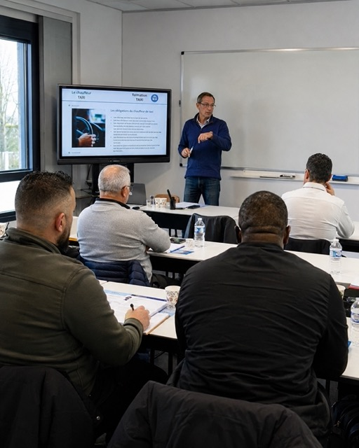

Stage agrééConforme à la réglementation
Stage agréé • Épinay-sur-Seine
Stage de récupération de points à Épinay-sur-Seine
Jusqu’à +4 points. Aux portes du 93, du 95 et du 92.
Deux jours dans un centre agréé, sans examen.
200 €
▣ Paiement en plusieurs fois disponible

+42 joursSans examen
Réservez en 2 minutes
Trouvez votre session
♙ Paiement en plusieurs fois
◇ Paiement 100 % sécurisé
2 joursUne formation en petit comité
Jusqu’à +4 pointsSelon votre situation
Sans examenPrésence obligatoire uniquement
Notre avantage local
Un centre.
Trois départements.
Idéalement situé entre le 93, le 95 et le 92, le centre TDL d’Épinay-sur-Seine est facile d’accès depuis le nord et l’ouest parisien.
95
93
92
Enghien-les-Bains
Deuil-la-Barre
Argenteuil
Villetaneuse
Saint-Denis
Colombes
Gennevilliers
Villeneuve-la-Garenne
TDL ÉPINAY
▦
Prochaine session
Dates à venir
Places limitées • Épinay-sur-Seine
200 €Paiement fractionné disponible
Réserver ma place →
Simple et rapide
Comment ça marche ?
Choisissez votre session
Sélectionnez la date qui vous convient à Épinay-sur-Seine.
Réservez et payez en ligne
Réglez en toute sécurité, avec le paiement fractionné disponible.
Participez aux deux journées
Suivez le stage avec nos animateurs dans un cadre professionnel.
Vos points sont crédités
Jusqu’à quatre points sont ajoutés selon votre situation.
Paiement 100 % sécuriséVos informations sont protégées
Carte bancaire • PayPal • Apple Pay • Google Pay
CBPayPal PayG Pay
✓
☎Centre de confianceUne équipe à votre écoute
Besoin d’aide ?01 80 90 72 49
Tout savoir
Questions fréquentes
Les réponses essentielles avant de réserver votre stage à Épinay-sur-Seine.
Combien de points puis-je récupérer ?
Le stage permet de récupérer jusqu’à quatre points, dans la limite du plafond de votre permis et sous réserve de respecter les conditions réglementaires.
Le stage comporte-t-il un examen ?
Non. Il n’y a pas d’examen final. Votre présence pendant les deux journées complètes est obligatoire.
Quand mes points sont-ils crédités ?
Les points prennent effet réglementairement dès le lendemain de la deuxième journée, puis apparaissent après traitement administratif.
Quels documents faut-il prévoir ?
Prévoyez une pièce d’identité, votre permis de conduire et les documents demandés lors de votre inscription.
Peut-on payer en plusieurs fois ?
Oui, le paiement en plusieurs fois est disponible lors de la réservation en ligne, selon les modalités proposées.
Le centre dispose-t-il d’un stationnement ?
Oui, des places sont disponibles sur place, notamment des places adaptées et réservées.
TDL Formation ÉpinayRécupérez jusqu’à +4 points.
Récupérez jusqu’à +4 points.
Reprenez la route sereinement.
À partir de 200 €
Voir les prochaines sessions →